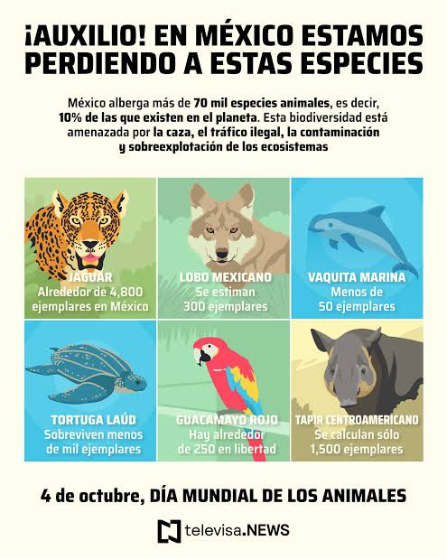

| Animales Extintos y en peligro de Extincion | ||||||||
| Tigre sumatra | Rinoceronte blanco del norte | Panda gigante | Tortuga galapagos | Leon asiatico | cebra de Montaña | |||
| Delfin del Rio | Jaguar | Dodo | Mamut Lanudo | Tigre de Tasmania | Gorilla de montaña | |||
| Aveztruz de la isla de la Ascension | Tortuga gigante de las Galapagos | Oso de las cavernas | Rinoceronte Lanudo | Ballena azul | Gorilla de montaña | |||
| Cebra de Llanura | Gacela de Thomson | Caiman | Lobo gris | Oso polar | Puma | Elefante Asiatico | Rinoceronte negro | Hipopotamo | Cocodrilo | Tiburon | Rayas |
| perro-lupus | Gato-Felis catus | Caballo-Equss caballus | Vaca Bos taurus | Cerdo Sus scrofa | Pollo-Gallus | |||
| Tortuga Terrestre | Pavo- Meleagris | Atun | Pez espada | Conejo- cuniculos | Hamster- auratus | |||
| Leon marino | Cangrejo de rio | Tortuga de Mar | Pajaro lira | Quagga | Lobo de Tasmania | |||
L a extinción de los animales es un proceso complejo que puede ser causado por una variedad de factores. A continuación, te menciono algunos de los principales motivos por los que se extinguen los animales:
L os desastres naturales como terremotos, huracanes y tsunamis pueden destruir los hábitats y causar la muerte de las especies.
L a caza y la pesca excesiva pueden llevar a la disminución de las poblaciones de especies y, en algunos casos, a su extinción.Contaminación*: La contaminación del aire, el agua y el suelo puede afectar a las especies y llevar a su extinción.
D ebemos de establecer acuerdos internacionales para proteger las especies que se encuentran en peligro en múltiples países.
Colaboración entre organizaciones*: colaborar entre organizaciones no gubernamentales, gobiernos y comunidades locales para compartir conocimientos y recursos para proteger la biodiversidad.
P revenir la extinción de las especies es un desafío complejo que requiere la colaboración de gobiernos, organizaciones no gubernamentales, comunidades locales y individuos.
L as poblaciones de animales que son pequeñas o tienen una estructura de edad desequilibrada pueden ser más vulnerables a la extinción.
Por que se han extinguido los animales?
Animales en Peligro de Extincion
Animales q debemos cuidar
